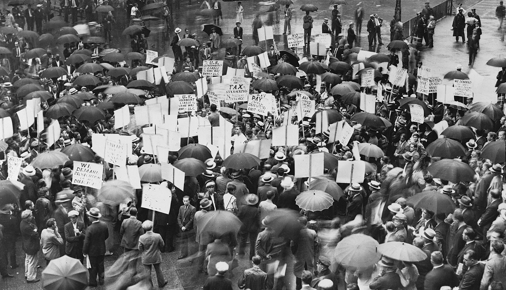
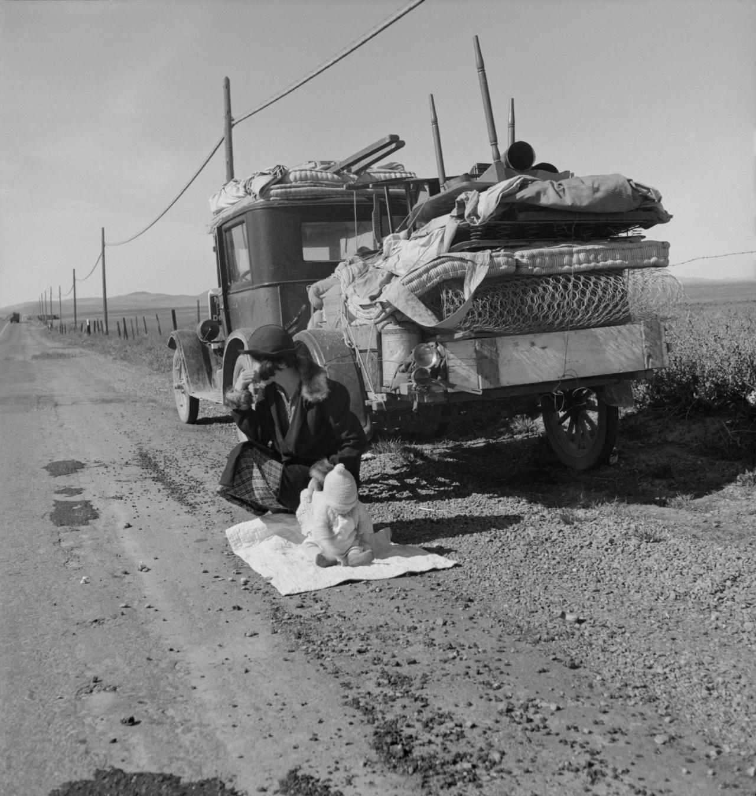

Recent economic times may mirror what American grandparents or great-grandparents went through in the Great Depression. While this time may be a challenge, it may be an opportunity to look back and learn how previous generations coped with tough economic times. Hopefully, we'll never need to relive their lessons learned, but at the very least we can appreciate their resourcefulness and gain perspective on our own situations.
Image Source: WikiMedia Commons
1. Quit using credit. If you don't have the cash to make a purchase, then don't buy it. One of the first lessons learned by people who survived the Great Depression was to never borrow money unless you have a clear plan for how you're going to pay it back. And when layoffs are a reality, expecting to pay for it with your Christmas bonus or your next paycheck is not a sound plan. If you don't have the money to pay for it right now, don't buy it.

Image Source: WikiMedia Commons
2. Enjoy the simple pleasures. During the Depression, people still had fun, just not lavishly expensive fun. Children had soapbox derbies, teenagers had dance contests, and everyone played Monopoly, did puzzles, read, and listened to the radio. Get together to discuss philosophy or pray; play poker or make crazy quilt pillows; play instruments and dance. In those days, it took some imagination and ingenuity, but they had a lot of fun without hanging out at the mall, and you can too. Many of the friendships and alliances formed during the Great Depression on the basis of such activities stood the test of time.
3. See frugality as a virtue. There's a difference between being frugal and being cheap or stingy. A frugal person makes the most of what they have; a cheap person is just focused on not spending money. During the Great Depression, frugality was seen as a positive trait. Plus, frugality requires planning, creativity, and critical thinking - all of which are important life skills, regardless of the state of the economy.
4. Reuse, reuse, reuse. The amount of stuff you have should already be reduced by your limited spending, and you'll always want to think twice before throwing anything away, whether it's into the trash or the recycling bin. Get everyone involved, especially children - hold up an item that you would normally throw away and ask, "How can we reuse this?"
5. Be thankful. When you're economically strapped? Of course. Make a list of the top five things you couldn't live without, and chances are, all of those things are not possessions. Most of all, be optimistic. As one Great Depression survivor said, "I never thought a cloud was so dark that I couldn't find a silver lining" (Betty Davison).

Image Source: WikiMedia Commons
{kind=link}
{kind=link}
{kind=link}